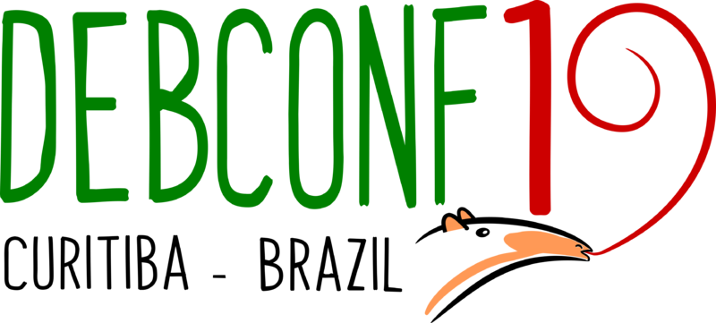
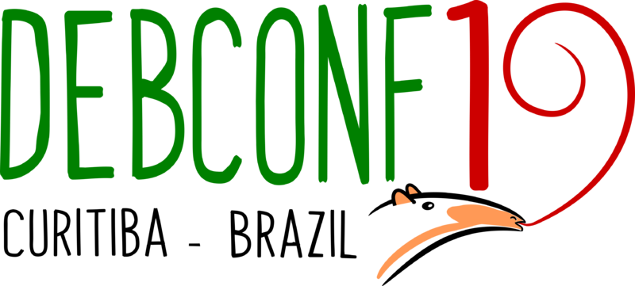

Bootstrappable Debian BoF
Giovanni Mascellani - gio@debian.org
23rd July 2019 - DebConf 19, Curitiba, Brazil
 

Please help taking notes on gobby!
gobby.debian.org:debconf19/bof/bootstrappable_debian_bof
Also nice if someone can monitor #debconf-videoconferencia and Gobby chat
How do I make yogurt?
To make yogurt, add milk to yogurt
What about Debian?
Maybe we think:
Source packages⇨Binary packages
But it's more like:
Source packages+Binary packages⇨Binary packages
Why do we care?
- Philosphy/freedom
- Can we consider Debian source-first? (and binary-second...)
- Freedom to study, adapt and enhance the software
- Security
- Ken Thompson, Reflections on Trusting Trust
- Every now and then we actually need to bootstrap something (a new language, a new architecture). What if this was not a painful thing?
- Useful for embedded distributions
- Being sure that everything is built from our current set of sources, not from past ones (also legal concerns)
A humble ambition
One day it will be possible to rebuild all Debian packages starting from nothing more than a few KBs of compiled code (and all the source packages).
Since Debian will also be reproducibly buildable, we will just check that the fingerprints match and happily throw away the result.
Where are we now?
Four stages of binary bootstrapping
- Inorganic matter: no kernel, just a simple compiler, a few KBs or binary code
- Organic molecules: kernel + C compiler, no shell, no standard utils, no distribution
- Prokaryote life: kernel + standard userspace + distribution essentials + toolchain (roughly
build-essential) - Eukaryote life: a whole distribution
Access to source code is always assumed to be unrestricted
GNU Guix/GuixSD
Prokaryote ⇨ Eukaryote
A package manager and a distribution emphasizing, among other things, reproducibility and bootstrappability. The build dependency graph does not contain cycles, except for a little strongly connected component at the beginning.
GNU MES
Organic ⇨ Prokaryote
Guix's effort to reduce the bootstrapping seed. Bootstraps GCC + glibc + binutils starting from a much simpler C compiler.
botch
Prokaryote ⇨ Eukaryote
By Johannes Schauer - j.schauer@email.de
https://gitlab.mister-muffin.de/debian-bootstrap/botch/wikis/home
Analyzes build-dep cycles, finds the strongly connected components and suggests how to cut cycles. Generates https://bootstrap.debian.net/.
rebootstrap
Eukaryote ⇨ Prokaryote (for another architecture)
By Helmut Grohne - helmutg@debian.org
https://wiki.debian.org/HelmutGrohne/rebootstrap
Cross bootstraps a Debian architecture assuming to have another one running (typically amd64).
See it in action: https://jenkins.debian.net/view/rebootstrap/!
- Sets up a cross toolchain and a Debian repository, then patches and cross compiles packages and adds them to the repository.
- Bugs filed: 727 outstanding, 6 forwarded, 21 pending, 176 resolved.
nbs
Organic ⇨ Prokaryote
https://gitlab.com/giomasce/nbs
Natively bootstraps a standard environment and toolchain starting from tcc and musl.
See it in action: https://gitlab.com/giomasce/nbs/pipelines!
- Compiles and installs tcc and musl in a chroot.
- Jumps inside and begins compiling everything else.
- Compile dash using a custom C script (also had to rewrite in C a couple of shell scripts).
- Compile GNU make using a custom shell script.
- Compile a number of standard POSIX utilities from the Heirlooom project.
- Compile M4 from FreeBSD, using lex and yacc from Heirloom (Heirloom also has m4, but not powerful enough for later stages).
- Compile flex 2.5.11, using lex and yacc from Heirloom; flex lexer was manually ported to be compatible with Heirloom lex.
- Compile flex 2.6.4, using the previous flex and yacc from Heirloom.
- Compile bison 1.35, which does not require lex or yacc.
- Then compile bison 1.75 and 1.875, each time using the previous version.
- Bison 2.0 is still to go...
asmc
Inorganic ⇨ Organic
https://gitlab.com/giomasce/asmc
Bootstraps a Linux kernel starting from a few KBs of binary code, running at ring 0.
See it in action: https://gitlab.com/giomasce/asmc/pipelines!
It also works on real hardware!
- Binary seed is just 6066 bytes.
- A minimal “kernel”.
- Basically just a compiler for a custom language called G.
- G is basically C but easy to compile (RPN, only
int, simpler lexing).
G vs C
fun sum_numbers 2 {
$from
$to
@from 1 param = ;
@to 0 param = ;
$i
$sum
@i from = ;
@sum 0 = ;
while i to <= {
@sum sum i + = ;
@i i 1 + = ;
}
sum ret ;
}
int sum_numbers(int p1, int p0) {
int from;
int to;
from = p1;
to = p0;
int i;
int sum;
i = from;
sum = 0;
while i <= to {
sum = sum + i;
i = i + 1;
}
return sum;
}
There are also syntaxes for byte operations and indirect function calling
Structures in G
const MYSTRUCT_FIRST 0
const MYSTRUCT_SECOND 4
const MYSTRUCT_THIRD 8
const SIZEOF_MYSTRUCT 12
$ptr
@ptr SIZEOF_MYSTRUCT malloc = ;
ptr MYSTRUCT_FIRST take_addr 0 = ;
ptr MYSTRUCT_SECOND take_addr
ptr MYSTRUCT_THIRD take = ;
ptr free ;
typedef struct {
int first;
int second;
int third;
} MyStruct;
MyStruct *ptr;
ptr = malloc(sizeof(MyStruct));
ptr->first = 0;
ptr->second = ptr->third;
free(ptr);
- The G compiler compiles a custom C compiler.
- The C compiler is quite bad, but good enough to compile a patched version of tcc.
- tcc is now a decent C compiler; it can be used to compile a patched version of iPXE.
- This is mostly an exercise step for me in preparation to compile Linux.
- But it has the nice feature that you have now a network driver and can download further code from the net.
- Compiling Linux with tcc is not quite there yet, but it might be not too far in the future.
Questions?
Thoughts?
Remember this is a BoF!
Challenges ahead
- Bootstrapping is hard!
- GCC 4.7 is the last version that can be compiled without a C++ compiler
- GNU Guix has bootstrapping path for OpenJDK 7 and 8, Ant, Maven and Clojure, but not Gradle, Scala or Kotlin
- Some experiments with GHC (Haskell)
- Many other languages and build systems...
- Missing bootstrappable culture
- Please make your packages bootstrappable (possibly using build profiles)
- Talk to upstream
- Implicit dependency on BIOS/firmware/CPU implementation
- RISC-V?
- Custom discrete components implementation?
- Many bootstrapping path pass through unmaintained software, especially at the lower levels
Thanks for coming!
Questions? Thoughts? Patches?
- https://wiki.debian.org/DebianBootstrap
- http://bootstrappable.org/
- https://bootstrapping.miraheze.org/
#debian-bootstrap @OFTCdebian-cross@lists.debian.org#bootstrappable @Freenode